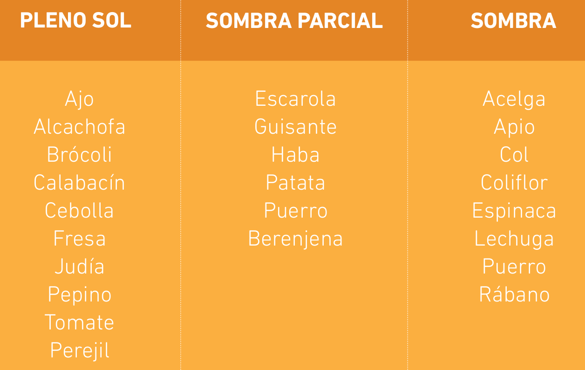
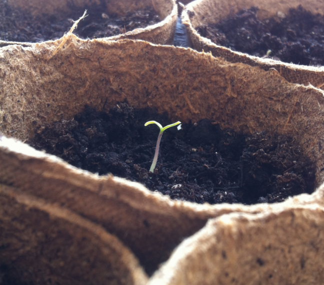
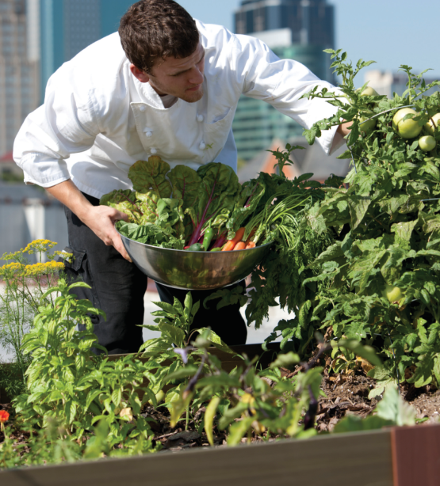
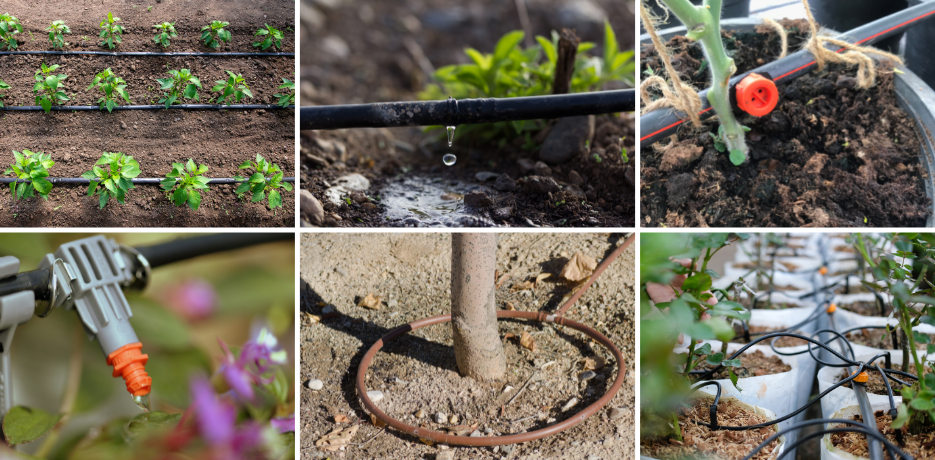
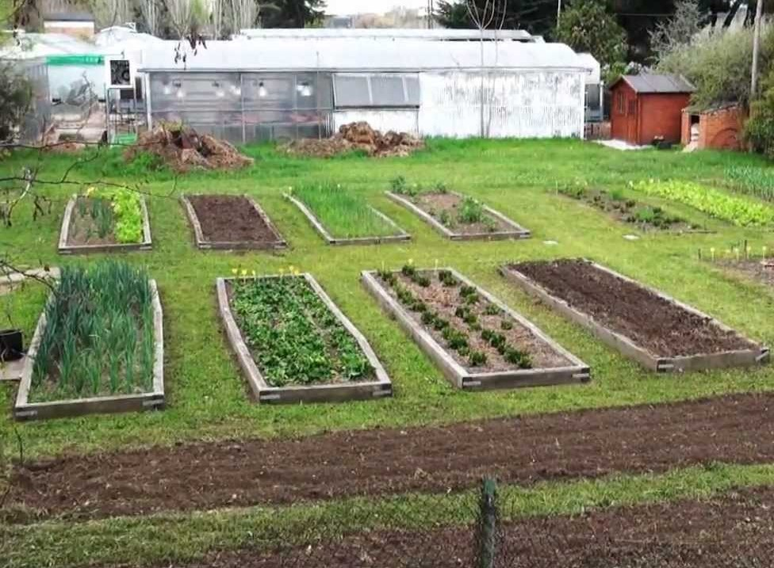

La mayoría de las plantas hortícolas necesitan sol directo para crecer y desarrollarse correctamente. Otras, agradecen un poco de sombra en las horas punta del día. Crear un plano y marcar en él la exposición solar que tenemos durante el día nos ayudará a distribuir mejor nuestro huerto y a situar las plantas en el espacio que mejor se ajusta a sus necesidades. En esta tabla encontraréis información sobre qué hortalizas toleran mejor una sombra total o parcial.
Debemos intentar que la tierra donde vamos a cultivar nuestras hortalizas esté suelta, esponjosa y aireada, con una buena capacidad de retención de agua y que contenga todos los nutrientes que las hortalizas van a necesitar para desarrollarse correctamente.
¿Qué sustratos podemos utilizar? La fibra de coco es muy esponjosa y tiene una gran capacidad de retención de agua. Mezclada con los nutrientes que aporta el humus de lombriz se convierte en el sustrato perfecto para un huerto en macetas.
 En ambos casos podemos solucionar el problema añadiendo compost (abono orgánico) a razón de 10 litros por m2, mezclándolo con los primeros 20 cm de tierra. Una vez mezclado, añadiremos una capa de 2 cm más de compost (unos 20 litros más por metro cuadrado). La aireación de la tierra la conseguiremos labrándola y mezclándola con el compost, quedará más suelta y esponjosa.
Todas las plantas necesitan una serie de nutrientes, los macronutrientes son Nitrógeno(N), Fósforo(P), Potasio(K), Magnesio(Mg) y los micronutrientes son Boro(B), Cobre(Cu), Hierro(Fe),Manganeso(Mn), Molibdeno(Mo), Zinc(Zn).
Compost: es un producto natural que obtenemos después del proceso de compostaje de residuos orgánicos de origen vegetal,
animal o de la mezcla de ambos.
Humus de lombriz o vermicompost: similar al compost con la diferencia de que el proceso de compostaje ha sido realizado
por lombrices. Es un producto de gran calidad que mejora las propiedades del suelo.
Estiércoles: de caballo, de gallina, de oveja... todos ellos aptos para el huerto siempre y cuando estén bien compostados.
De lo contrario, pueden llegar a quemar nuestras plantas como consecuencia de la elevada temperatura a la que se llega
durante el proceso de descomposición (compostaje).
Abonos orgánicos: guano (excrementos de aves marinas), harina de pescado, sangre, cuerno y pezuña animal, etc.
En el momento en que vayamos a iniciar nuestro huerto deberemos decidir si queremos germinar nosotros mismos las semillas o si preferimos la inmediatez de comprar un plantel. Sembrar semillas no requiere mucha experiencia pero los primeros días necesitaremos estar muy pendientes de nuestros semilleros para que no les falte ni la humedad ni la temperatura que necesitan para germinar.
Utilizaremos bandejas de alveolos y los rellenaremos de sustrato. En cada alveolo colocaremos dos o tres semillas, las cubriremos muy ligeramente y regaremos bien, a ser posible con un pulverizador para no removerlas ni enterrarlas en el sustrato. Consultad el calendario de siembra para saber a qué profundidad colocar las semillas de cada variedad. Las semillas de tomate lo hacen rápidamente (5-6 días) mientras que las de pimiento tardan más (hasta 20 días).
Hay que ser previsor y sembrar las semillas bastantes meses antes para que el plantel tenga el tamaño adecuado para ser trasplantado en su ubicación definitiva. Debemos mentalizarnos de que con la globalización nos hemos acostumbrado a encontrar todo tipo de hortalizas en las tiendas, pero que en el huerto deberemos ir al ritmo que marcan las estaciones y cultivar hortalizas de temporada.
Una de las cosas que deberemos aprender es a regar nuestro huerto. No necesitará la misma cantidad de agua un plantel acabado de trasplantar que cuando alcance su tamaño máximo y esté en plena producción. También influye la época del año en la que estemos, y si estamos cultivando en tierra o en macetas. Un buen consejo es aprender a observar nuestras plantas, ya que además de ver si el sustrato está seco o húmedo, sus hojas nos indicarán si necesitan riego.
Al planificar el espacio que vamos a destinar nuestro huerto, debemos tener en cuenta una serie de factores: las necesidades nutritivas, lumínicas y de compatibilidad entre las distintas familias de plantas. Por ello, es conveniente aplicar una rotación de cultivos dentro de las parcelas en que dividamos nuestro huerto. Es aconsejable dividir el huerto en cuatro bancales y aplicar alguno de los distintos métodos de rotación de cultivos. Uno de los más habituales es el de familias botánicas.

Bancal 1:
Solanáceas (berenjenas, pimientos y tomates).
Bancal 2:
Liliáceas (ajos, cebollas y puerros) y Umbelíferas (apio, perejil y zanahoria).
Bancal 3:
Compuestas (lechugas y escarolas), Cucurbitáceas (calabazas, calabacines, melones, sandías),
Quenopodiáceas (acelgas y espinacas).
Bancal 4:
Crucíferas (brócoli, coles y coliflores, rábanos) y leguminosas (habas, judías y guisantes).